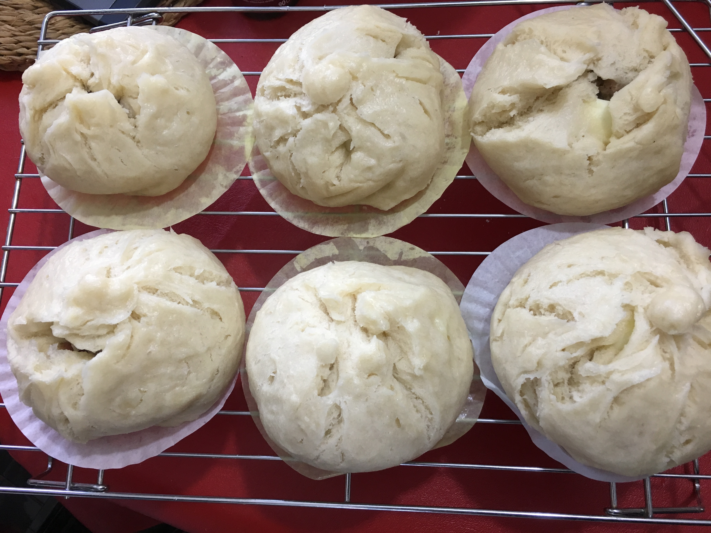
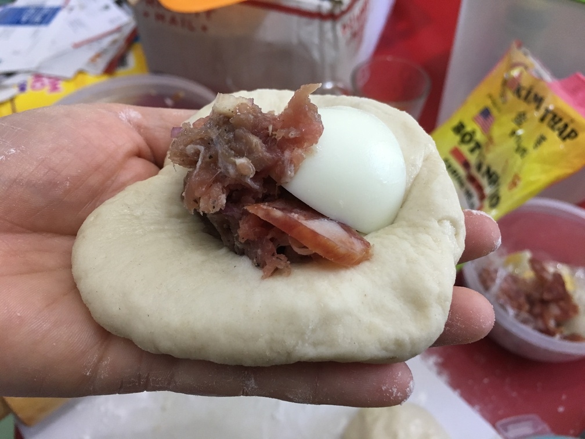
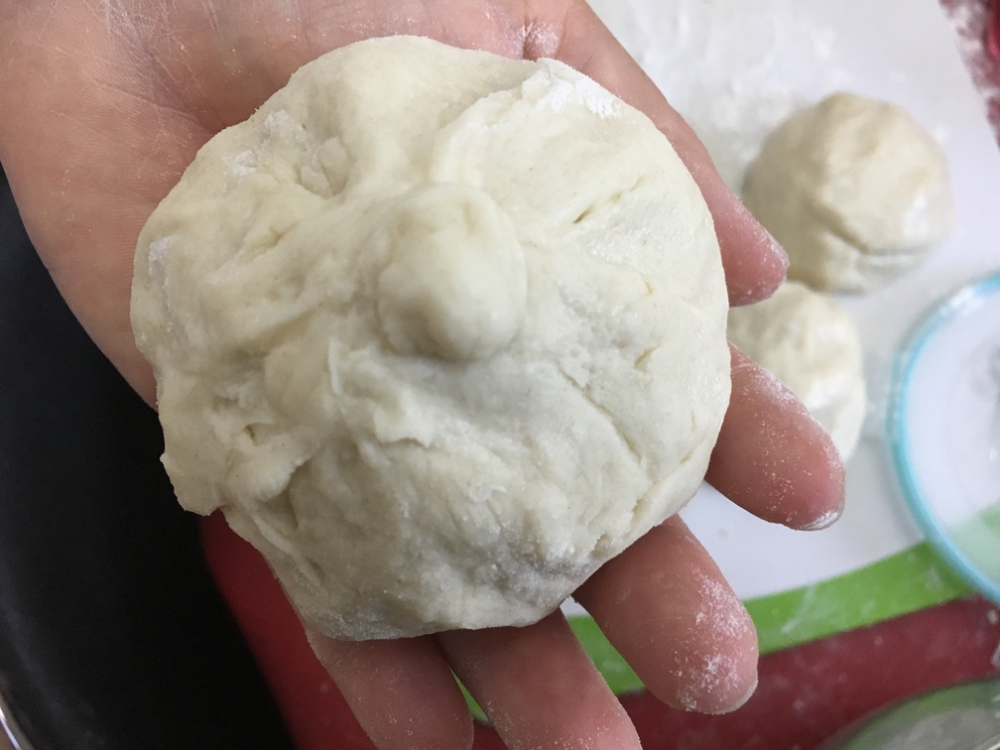

| Other | Meat | Veggie | Fruit |
|---|---|---|---|
| bot banh bao | eggs | dried fungus mushrooms | |
| oil | ground pork | shallot | |
| pepper | lap xuong (chinese pork sausages) | ||
| salt | |||
| soy sauce | |||
| sugar | |||
| whole milk |
| instructions |
|---|
| Marinate ground pork (66% lean) with shallots, salt, pepper, soy sauce, and optionally sliced mushrooms |
| Cut lap xuong into slices |
| Hard boil egg and cut into 4 pieces |
| Mix 1.75 c banh bao flour to 0.25 c sugar |
| Slowly add 1 c milk and 1 tbsp oil |
| Knead batter, add more flour to ensure it is not to sticky |
| Add a little oil before forming balls |
| Form a ball with dough, the size of stress ball |
| Flatten the ball, about the size of your hand |
| Fill with the meat, lap xuong, and a quarter egg |
| Fold up the edges and pinch while twisting in the middle, take care not to expose any holes |
| Place onto a flattened muffin cup |
| Steam for 20 min |